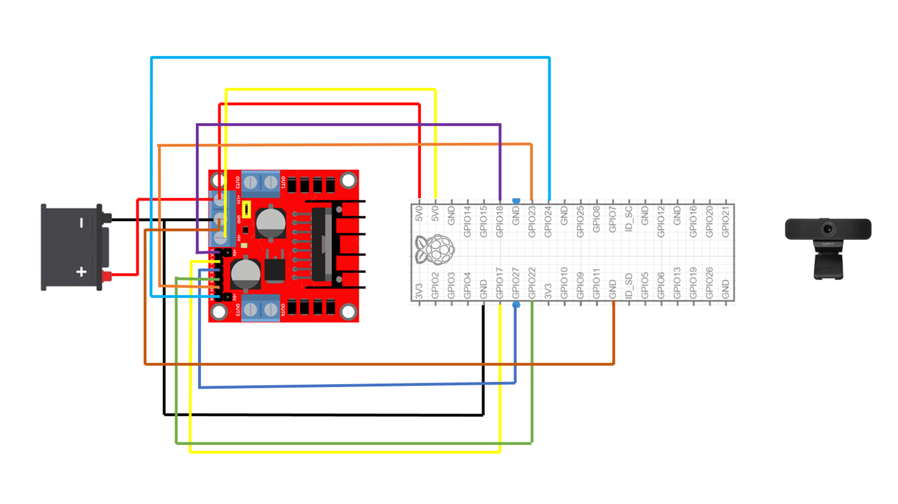
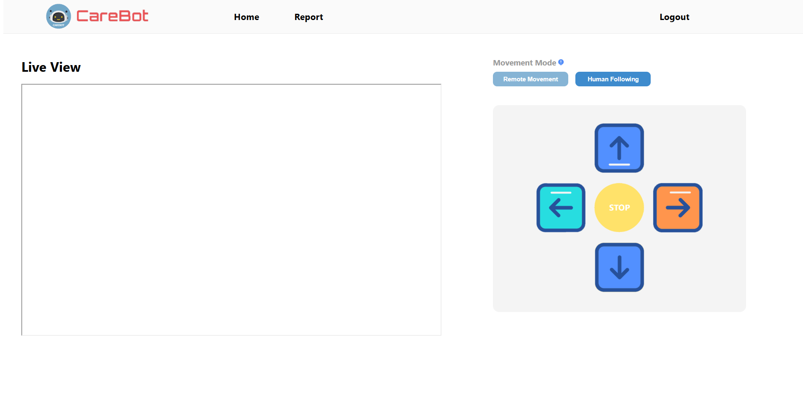

Abstract
This project presents the design and development of an autonomous assistive robot capable of visually tracking a human and responding to voice commands in real time. Built with a modular architecture, the system integrates computer vision, control systems, and web technologies to enable both autonomous navigation and remote operation.
The robot uses YOLOv5 for human detection, combined with Kalman filtering and ADMM-based optimization for smooth tracking and trajectory refinement. A PID controller manages motion dynamics, while an FFT-enhanced voice interface allows intuitive verbal commands like "follow me" or "stop."
To extend usability, a web-based interface provides live video streaming and remote control functionalities, allowing caregivers or users to monitor and guide the robot through a browser.
The solution is designed for real-world indoor applications requiring interactive human-following, assistive support, and remote oversight, showcasing a scalable model for intelligent home robotics.
Table of Contents
Introduction
Overview
In a world increasingly driven by automation and intelligent systems, the integration of smart robotics with intuitive human interaction opens up vast possibilities across daily living, security, and personal assistance. This project explores the development of a vision-guided, voice-responsive mobile robot capable of tracking and interacting with a human target in real time.
The system combines deep learning-based human detection, adaptive motion control, and remote accessibility through a web-based interface. Its core strength lies in its ability to understand and respond to the environment—enabling applications in personal robotics, home automation, and indoor navigation support where touchless interaction is key.
Problem Statement
Modern living environments often demand multitasking, safety, and accessibility enhancements. Whether in smart homes, research labs, or service environments, there is a growing demand for autonomous systems that can follow a designated individual, interpret voice commands, and adapt their path dynamically.
Conventional robots often rely on predefined paths or manual control, limiting their flexibility. This project addresses the need for a real-time interactive robot that not only follows human movement but also allows for seamless voice-driven task switching and remote operation via a live web interface.
By integrating multiple AI modules—vision, audio, and optimization—the robot serves as a prototype for next-generation autonomous companions that operate in unpredictable indoor settings.
Objectives
Human Detection & Following
Design a system capable of detecting a person using computer vision and following them accurately within indoor environments.
Voice-Based Command Processing
Enable natural control through spoken words, allowing the user to instruct the robot to "follow" or "stop" without physical interaction.
Smart Motion Control
Implement a robust control pipeline involving Kalman filtering, PID control, and ADMM-based optimization to ensure stable navigation.
Remote Monitoring Platform
Provide a web interface that streams the robot's live camera feed and allows observers to supervise its actions from any connected device.
Literature Review / Related Work
This section explores relevant research that informs the design and development of our autonomous human-following robot. The following papers provide insight into various components such as visual tracking, object detection, voice interaction, and remote monitoring.
Table 4.1: Literature Review Summary
| Paper Title & Authors | Key Contributions | Methodology & Relevance |
|---|---|---|
| A Vision-Based Human Following Robot for Indoor Environments S. Satake et al., 2009 |
1. Developed a human-following robot using monocular vision. 2. Balanced speed and accuracy for mobile devices. |
Utilized color and motion tracking from camera inputs. Relevant to our use of YOLO for camera-based indoor person tracking. |
| YOLOv4: Optimal Speed and Accuracy of Object Detection A. Bochkovskiy et al., 2020 |
1. Enhanced real-time object detection using CNNs. 2. Achieved strong performance on edge devices. |
Our system incorporates YOLOv4 for real-time human detection on a Raspberry Pi, leveraging its efficiency for embedded systems. |
| Voice Controlled Human Assistive Robot with Remote Monitoring System T. S. Sudha et al., 2021 |
1. Integrated voice commands in assistive robots. 2. Enabled caregiver monitoring. |
Similar to our voice-command processing and remote access through a web interface. Highlights importance of intuitive control. |
| Teleoperated Assistive Robot with Live Video Streaming and Joystick Control K. S. Raza et al., 2020 |
1. Proposed joystick-based navigation. 2. Included a live video feed for better remote supervision. |
Closely aligns with our project's live web camera streaming and web-based control interface, though lacking smart interaction. |
| Real-Time Human Detection and Tracking for Mobile Robots Using Deep Learning Y. Zhang & H. Zhao, 2021 |
1. Showcased accurate deep learning-based human tracking. 2. Applied methods to embedded systems. |
Validates our use of CNNs and YOLO for on-device real-time human tracking, but lacks user interactivity via voice/web. |
Summary of Gaps in Literature
- Satake et al. focused on traditional vision techniques without leveraging modern deep learning for higher accuracy and robustness.
- Bochkovskiy et al. delivered a powerful object detection tool (YOLOv4), but did not contextualize its use within assistive robotics or remote interfaces.
- Sudha et al. emphasized voice control and monitoring, yet missed out on incorporating live control or scalable cloud integration.
- Raza et al. presented joystick-based remote control with camera streaming but did not support voice commands or smart autonomous tracking.
- Zhang & Zhao effectively applied deep learning to mobile platforms but did not explore human-robot interaction or user-centric interfaces.
Methodology & Implementation
System Architecture Overview
The robot is designed with a comprehensive workflow that enables real-time human tracking, adaptive navigation, and responsive control through both autonomous and remote interfaces.
Hardware Architecture
Raspberry Pi-based computing unit with camera module, motor drivers, audio interface, and Wi-Fi connectivity for remote access.
Computer Vision
YOLOv5-powered person detection with Kalman filtering for prediction during occlusion or temporary visual loss.
Path Planning
ADMM optimization for smooth trajectory generation with dynamic obstacle consideration and efficient path execution.
Web Interface
Provide a web interface that streams the robot's live camera feed and allows observers to supervise its actions from any connected device.
Operational Workflow
The robot follows a systematic operational workflow that transforms visual and audio inputs into intelligent movement:
Step 1: Capturing Video from the Webcam
The process begins with the onboard camera capturing a continuous stream of visual data:
- The webcam captures frames at a resolution of 640×480 pixels at approximately 30 frames per second
- Each frame is a 3D array (640×480×3) representing RGB pixel values for every point in the image
- The raw pixel data is transmitted to the Raspberry Pi via USB connection for processing
This visual data forms the foundation for all subsequent detection and tracking functions.
Step 2: Listening for Voice Commands
In parallel with video processing, the system monitors audio input for voice commands:
- A microphone captures sound as a digital signal at a sampling rate of 16,000 Hz
- The signal undergoes Fast Fourier Transform (FFT) to separate frequency components:
FFT transforms time-domain signals to frequency-domain representation
- High frequencies (>10 Hz) are filtered out to reduce noise, and the signal is reconstructed using inverse FFT
- A pre-trained keyword detection model identifies specific commands: "follow me" and "stop"
This audio processing happens continuously, allowing for hands-free control of the robot.
Step 3: Processing Voice Commands
Detected voice commands determine the robot's operational state:
- Every 10 frames (~0.3 seconds), the system evaluates any detected commands
- The robot maintains a binary "following" state (True/False):
- "follow me" sets following = True, activating the tracking and movement systems
- "stop" sets following = False and immediately halts the motors
This state management system ensures responsive control through natural voice interaction.
Step 4: Detecting a Person in the Frame
When in "following" mode, the system actively searches for human targets:
- Every 3 frames, the current image is analyzed using YOLOv5 for efficient processing
- YOLOv5 divides the image into a grid and predicts object classes and bounding boxes
- Results are filtered to retain only "person" class (class 0) detections with >50% confidence
- For each detected person, a bounding box [x₁, y₁, x₂, y₂] is identified
- The center point is calculated as:
.png)
This center point becomes the primary tracking target for the robot's navigation system.
Step 5: Smoothing Position with Kalman Filter
To handle detection noise and intermittent tracking loss, a Kalman filter is applied:
- The filter maintains a 4D state vector tracking both position and velocity:
.png)
- State transition matrix (F) models how the system evolves over time:
.png)
- Observation matrix (H) connects measurements to state variables:
.png)
- The prediction step estimates the current state based on previous state:
- The update step refines predictions using new measurements:
This filtering produces a smoothed target position (Cx, Cy) that reduces jitter and maintains tracking during brief detection losses.
Step 6: Path Optimization with ADMM
The Alternating Direction Method of Multipliers (ADMM) calculates optimal movement paths:
- ADMM iteratively refines a trajectory between current position and target:
-
discriminatory
- The primal update optimizes the current position towards the target:
.png)
.png)
.png)
- The dual update refines the Lagrange multiplier:
- Inverse kinematics converts optimized path to motor commands:
This optimization ensures smooth, efficient movement that accounts for the robot's physical constraints.
Step 7: Moving the Robot
The final step translates optimized positions into precise motor commands using PID control:
- The error between current and target position is calculated:
.png)
- Proportional term provides immediate response to current error:
.png)
- Integral term addresses accumulated error over time:
.png)
- Derivative term responds to rate of error change:
.png)
- The combined PID output determines control signals:
.png)
- These signals generate two key outputs:
- Steering angle: Controls differential turning
- Speed: Manages forward velocity
- Special behavior cases include:
- If no person is detected: robot rotates in place to search
- If "stop" command received: all motors immediately halt
- Forward kinematics translates desired motion into wheel velocities:
This creates smooth, precise movement that maintains effective tracking while avoiding jerky or unstable motion.
Signal Processing (FFT Filter)
Beyond voice command processing, FFT filtering is also applied to visual data to enhance detection quality:
.png)
By converting spatial pixel values to the frequency domain, the system can:
- Retain low-frequency components representing meaningful visual shapes and structures
- Remove high-frequency components that typically correspond to noise
- Transform back to the spatial domain with cleaner, more processable images
This preprocessing step significantly improves detection reliability in varying lighting conditions.
Web Application Interface
The robot is equipped with a web interface that streams video and allows manual control, extending functionality beyond autonomous operation:
Key features include:
- Live video stream from the onboard camera with visual overlays showing detection status
- Manual control buttons (forward, backward, left, right) for direct navigation
- Status indicators showing current operational mode and system health
- Command input interface for remote voice command simulation
The web interface is built using:
- Node.js backend for handling WebSocket connections and robot communication
- Responsive frontend with real-time updates using JavaScript
- Cross-platform compatibility for access from any device with a modern browser
This dual-mode control enhances usability in real-world environments, particularly for caregiving scenarios where remote monitoring and occasional intervention may be necessary.
Results and Discussion
System Performance
The autonomous assistive robot was successfully developed and tested in controlled indoor environments. The hardware setup included:
- Raspberry Pi as the central processing unit.
- A real-time vision camera module for human detection.
- A motor driver circuit connected to dual DC motors for movement, regulated via PWM signals.
These components worked together to ensure stable mobility and perception.
Human Tracking Accuracy
Using the YOLOv5 object detection framework, the robot effectively identified and followed a target person:
- Kalman Filter predicted the location of the person even when detection was intermittent.
- ADMM optimization provided smooth trajectory updates, minimizing sudden turns or oscillations.
- The PID controller dynamically adjusted steering and speed, allowing real-time heading correction and velocity tuning.
The result was a consistent and responsive human-following behavior, with minimal deviation from the target's path.
Voice Interaction
The robot demonstrated reliable voice-command response using FFT-enhanced filtering:
- Commands like "follow me", "stop", and "come here" were recognized and executed promptly.
- In case of temporary visual loss, the robot re-oriented based on voice cues and re-engaged tracking autonomously.
This multimodal control added flexibility and robustness to the system.
Web Interface and Remote Operation
An integrated web-based companion application was developed for enhanced usability:
- Users could access a live video feed from the robot's onboard camera.
- Manual control options such as directional buttons allowed caregivers or users to operate the robot over a local network.
- The interface was particularly useful in scenarios where autonomous tracking was momentarily ineffective or user intervention was required.
This capability significantly extended the utility of the robot beyond autonomous operation, enabling remote situational awareness and control.
Discussion Summary
- The system performed reliably in indoor tracking tasks, with seamless coordination between detection, control, and optimization components.
- The use of real-time deep learning, signal filtering, and dynamic motor control led to a stable and responsive robot behavior.
- The web application added a crucial layer of interactivity, enhancing both usability and accessibility.
Demo of Simulation and/or Hardware
Project Demonstration
Simulation demonstration video showing the robot in action.
Hardware Setup
User Interface
Screenshots of the web interface showing control buttons, and status indicators.
Conclusion and Future Work
Conclusion
This project successfully demonstrates the design and implementation of an autonomous robot system that integrates human tracking, adaptive navigation, and remote accessibility. By combining visual detection via YOLO, motion optimization using ADMM, and signal enhancement through FFT filtering, the robot achieves reliable real-time tracking and smooth movement in dynamic indoor environments.
The addition of a web-based companion interface enhances usability by enabling live video streaming and remote control. This makes the system suitable not only for assistive scenarios but also for broader applications such as smart indoor logistics, personal robotic companions, or educational robotics.
The dual-mode architecture—Autonomous Mode for self-driven behavior and Remote Mode for manual intervention—makes the system flexible and robust in various real-world use cases.
Future Work
Advanced Obstacle Avoidance
Integrate depth sensing (LiDAR or stereo vision) for safer navigation in complex environments.
SLAM Implementation
Add Simultaneous Localization and Mapping algorithms to build and navigate environment maps.
Multi-Person Tracking
Extend tracking to handle multiple humans with proximity and identity-based prioritization.
Voice Assistant Integration
Add natural language understanding and TTS responses for conversational interaction.
Battery Management
Enable battery monitoring and autonomous return to charging station when needed.
Edge AI Optimization
Explore model pruning or quantization to improve inference speed and energy efficiency.
References
- S. Satake, S. Kanda, T. Kanda, D. Glas, M. Imai, and N. Hagita, "A Vision-Based Human-Following Robot for Indoor Environments," Proceedings of the IEEE International Symposium on Robot and Human Interactive Communication, 2009.
- A. Bochkovskiy, C. Y. Wang, and H. Y. M. Liao, "YOLOv4: Optimal Speed and Accuracy of Object Detection," arXiv preprint arXiv:2004.10934, 2020.
- T. S. Sudha, A. Muthamil Selvi, and S. Lavanya, "Voice Controlled Human Assistive Robot with Remote Monitoring System," International Journal of Engineering Research & Technology (IJERT), vol. 10, no. 06, pp. 85–89, 2021.
- K. S. Raza, M. A. Bakar, and A. M. Azmi, "Teleoperated Assistive Robot with Live Video Streaming and Joystick Control," International Journal of Advanced Computer Science and Applications (IJACSA), vol. 11, no. 6, 2020.
- Y. Zhang and H. Zhao, "Real-Time Human Detection and Tracking for Mobile Robots Using Deep Learning," Journal of Intelligent & Robotic Systems, vol. 101, no. 2, 2021.
- Jianjun N., "Deep Learning-Based Scene Understanding for Autonomous Robots," 2023. [Online]. Available: https://www.oaepublish.com/articles/ir.2023.22